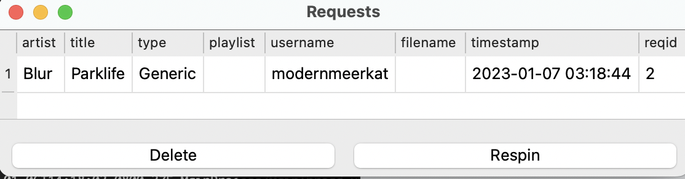
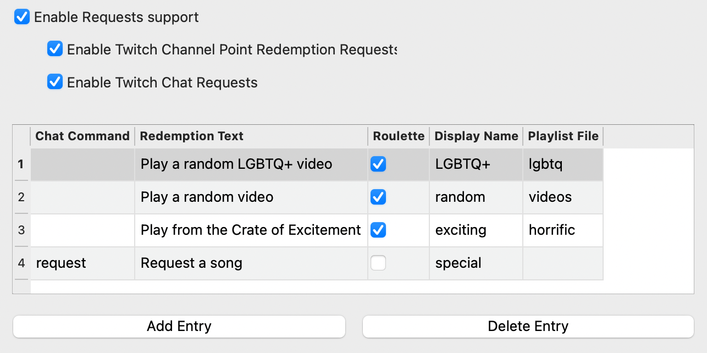

User Track Requests¶
What’s Now Playing has the ability to help manage requests that come from Twitch users.
There are two types of requests, roulette and non-roulette. Roulette requests will pick a random song from the given playlist/crate as the request. Non-roulette require the user to provide the title and optionally the artist.
{kind=link}
If What’s Now Playing detects the song has been played, it will be removed from the Requests queue.
Using Twitch Chat for Requests¶
To enable Twitch chat to be used for requests:
Configure and enable Twitch Chat support.
Create a command that will be used for requests. There is an example template file called ‘twitchbot_request.txt’ as an example.
Assign that command to the appropriate entry in the Requests settings in What’s Now Playing. See later on below.
For non-roulette requests, artist and title information should be entered on the chat line. For example:
modernmeerkat: !request Blur - "Parklife"
modernmeerkatbot: Thanks @modernmeerkat! Your special request of "Parklife" by Blur has been noted!
Using Twitch Redemptions for Requests¶
To enable Twitch redemptions to be used for requests:
Configure and enable Twitch support with Client and Secret IDs.
Create a a reward in the Twitch UI. Keep track of the _exact_ text used in the reward description.
If the channel redemption is not a roulette request, then the reward should take user input to provide the artist and title information.
Copy the exact text into the ‘Redemption Text’ field in the appropriate entry in the Requests settings in What’s Now Playing.
NOTE: What’s Now Playing does not manage the Twitch-side Reward Requests Queue. You will still need to approve or refund channel points in the Twitch moderator panel.
Configuring Requests¶
{kind=link}
Under Settings, select Requests.
Enable Requests support
Enable one or both of Twitch Channel Redemption Requests and Twitch Chat Requests depending upon your needs.
Add Entry
Change the Chat Command to the Twitch Chat command in order to enable this Request via chat.
Put in the exact Twitch reward text in the Redemption Text field to enable this Request via channel points.
If this request is meant to be a Roulette, check the Roulette box.
Fill in a displayname. This name will be shown to users when referencing requests of this type.
For roulette requests, enter in the playlist or crate name. See below for more information.
Roulette Playlists¶
In order for Roulette requests to work, What’s Now Playing needs to have a list of tracks to use. The name here should match the name that your DJ software also uses:
Serato: The name of the crate or smart crate. Virtual DJ: playlist name Traktor: playlist name
NOTE: See the section on your particular DJ software for known caveats/issues.
If the random song picked is not desired (inappropriate, already played, etc), you may force the software to re-pick:
Selecting the track in the Requests window.
Click Respin
Wait a few moments for the software to pick a new one. (It does not do it immediately.)
The track should get replaced with a different one.
If it is still not desired, repeat this process as many times as necessary.
NOTE: There is no notification to users that Respin has been selected.